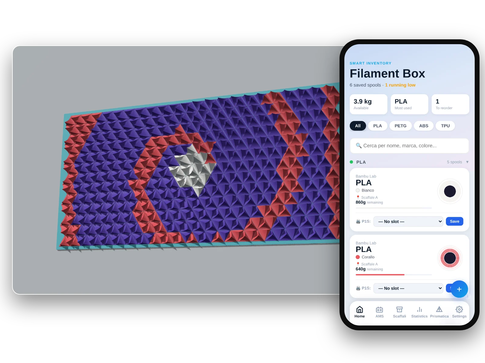

~/lab/filament-prismatica $ ./open
Filament-Prismatica
v2.0.2 · liveA filament inventory for 3D printing, plus a tool that turns any picture into 3D triangle wall art, printed one colour per plate with the filaments you actually own.

two tools, one inventory
FilamentBox
Keeps track of every spool: how much is left, where it is, whether it is still sealed.
- Add spools by hand, from a barcode, from a photo of the label (Claude AI) or in bulk from a Bambu Lab invoice (PDF)
- Shelves view, AMS slots, print log and statistics
- With Home Assistant: used grams come off the right spool automatically after every print
- OpenTag3D NFC tags, written with your phone or a D1 Mini + PN532 reader
Prismatica
Turns a picture into a wall art made of hundreds of 3D-printed triangles that snap into a frame.
- Six piece shapes, heights and tip directions driven by the image
- Picks the colours among the filaments in stock, updated live
- 3MF and STL plates already numbered, one colour per plate: no AMS needed
- 1:1 assembly template for an A4 printer and optional Bambu color mixing
Three editions
Same app, same screens. Pick the one that fits what you have at home.
| Lite | Smart | Full | |
|---|---|---|---|
| Needs a server | no | Docker | Docker |
| Where your data lives | your browser | your server | your server |
| Inventory, shelves, invoices, barcode | yes | yes | yes |
| Label scan with Claude AI | yes | yes | yes |
| Automatic usage from Home Assistant | no | yes | yes |
| NFC reader (D1 Mini + PN532) | no | yes | yes |
| Prismatica | yes | no | yes, live with your stock |
Get started
Lite: no install
- In the browser: press “Open FilamentBox” above. In Chrome or Edge you can install it as an app and use it offline.
- On a PC without internet: download the zip, unpack it and open
lite/index.html. - Your spools stay in that browser: export a backup from Settings now and then.
Smart and Full: home server
- Copy the
server/folder to a machine with Docker (NAS, mini PC, Raspberry Pi). - Start the stack in
docker-compose.full.ymlordocker-compose.smart.yml. - Connect Home Assistant in Settings and paste the generated webhook YAML.
Label scanning needs an Anthropic API key, which you add in Settings → Claude AI. Step-by-step guides, in Italian, are in the docs folder.
I'm not a programmer. I designed FilamentBox and Prismatica for my own printer and shelves and built them with AI (Claude): I decide what they should do and test them at home, the AI writes the code. Issues and pull requests are welcome on GitHub.